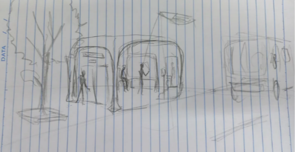
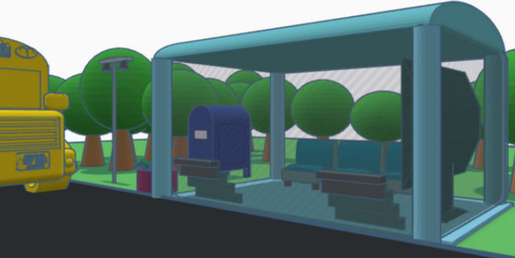
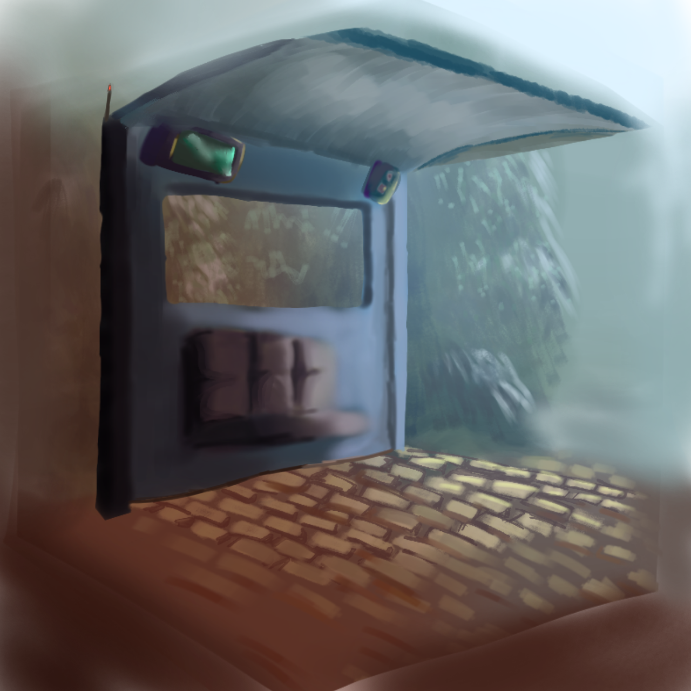

A ideia inicial de criar um ponto de ônibus inteligente era ambiciosa e
buscava melhorar
significativamente a experiência dos passageiros de transporte público.
A proposta consistia em
desenvolver um ponto de ônibus equipado com tecnologia de ponta para tornar a espera pelos ônibus
mais conveniente e eficiente.
A principal característica desse ponto de ônibus inteligente era a
integração de sistemas de GPS, tanto nos ônibus quanto no próprio ponto de ônibus. Isso permitiria
que os passageiros soubessem exatamente quando um ônibus específico estaria chegando à parada,
eliminando a incerteza e a espera prolongada.
Além disso, o ponto de ônibus contaria com uma máquina para carregar cartões de passagem,
simplificando o processo de pagamento e evitando filas nas paradas. Isso tornaria o transporte
público mais conveniente para os passageiros, incentivando mais pessoas a usarem esse meio de
transporte. Uma característica inovadora desse projeto era a inclusão de uma tela touchscreen
interativa. Essa tela guia forneceria informações úteis aos passageiros, como horários de chegada
dos ônibus, rotas disponíveis, previsões de tráfego e até mesmo informações sobre o clima. Isso
ajudaria os passageiros a planejar suas viagens de maneira mais eficaz.


A ideia original também previa que o ponto de ônibus fosse uma estrutura fechada,
protegendo os
passageiros das condições climáticas adversas, como chuva ou vento. Isso melhoraria ainda mais o
conforto e a conveniência para os usuários do transporte público.
A ideia original também previa que o ponto de ônibus fosse uma estrutura fechada,
protegendo os
passageiros das condições climáticas adversas, como chuva ou vento. Isso melhoraria ainda mais o
conforto e a conveniência para os usuários do transporte público.
No entanto, a ideia inicial de criar um ponto de ônibus tão avançado acabou sendo descartada devido
a restrições orçamentárias e à falta de materiais disponíveis para criar uma estrutura tão
elaborada. Como resultado, o projeto foi simplificado.

O ponto de ônibus inteligente simplificado ainda manteria a funcionalidade de GPS,
permitindo que os
passageiros acompanhassem a chegada dos ônibus em tempo real. Além disso, uma tela com áudio seria
instalada para fornecer informações audíveis sobre os horários de chegada dos ônibus, tornando o
sistema acessível a todos, incluindo pessoas com deficiência visual.